亞庇支會
一封求助信，能走多遠？

先別急著下結論，讀完再說說你的想法～
這一篇講亞庇支會：1996年，一位病人寫信向上人求助，慈濟人從馬六甲飛到沙巴，從此在東馬生根。
你會讀到守護山區產婦的「生命關懷之家」、蓋在沼澤地山坡上的學校，還有一片布滿垃圾的淺灘。
下面是原書的節錄，紅色底線是我們替你標出的轉折點。
讀之前：一封求助信寄到很遠的地方，你覺得會有人來嗎？
從馬六甲飛到亞庇
1996年，亞庇還沒有慈濟志工。閱讀引導
1996年5月，彭天送致函向證嚴上人求助，由於當時亞庇尚未有慈濟據點，只能就近請馬六甲慈濟協助關懷。

要坐飛機呢！
劉濟雨、簡慈露一行五人於7月29日飛抵亞庇，並藉此因緣，當晚於亞庇佛教會舉辦慈濟茶會，邀約五十多名佛友分享慈濟。
翁敦學和多位佛友受慈濟大愛精神所感動，發心承擔關懷援助彭天送，從此慈濟足跡拓展至東馬。
把慈濟帶到了東馬！
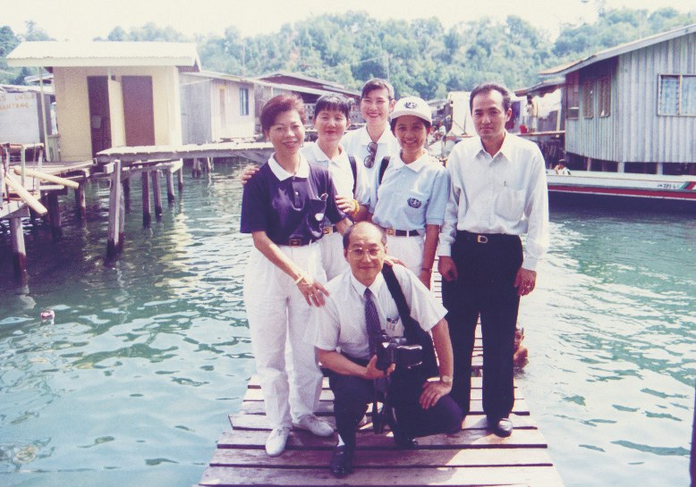
猜一猜閱讀引導
翁敦學在自家餐廳辦茶會，呼籲「一人找五人」。短短三個月，募到多少位會員？
2004年因會務與志工人數持續增長，會所空間不敷使用，志工陳國樑及王美蓉伉儷因此發心捐出位於里卡士花園的土地，將雙層樓洋房無償提供慈濟改建為新會所，並於同年7月啟用。
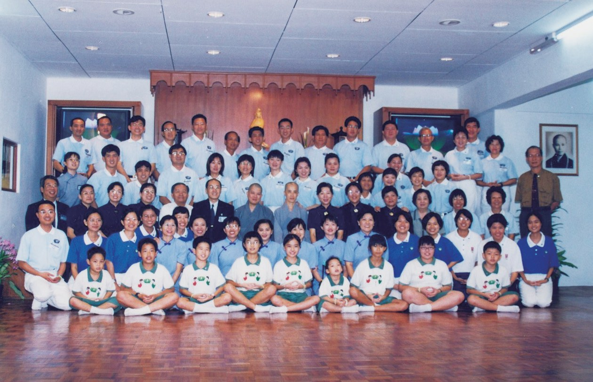
山裡的媽媽
醫院、學校、產婦、火災。閱讀引導
1998年起，亞庇慈濟志工每週到伊麗莎白中央醫院關懷病患，幫助許多苦難家庭解決醫療費和生活困境。
「慈濟協助關懷病患，無疑減輕了醫護人員的重擔。」
副院長哈芝阿旺瑟迪阿醫師感激・p.673為了幫助清寒學子就學，亞庇慈濟於2001年設立「清寒子弟助學金」專案，截至2018年12月為止，已嘉惠了一萬多人次的貧寒子弟。
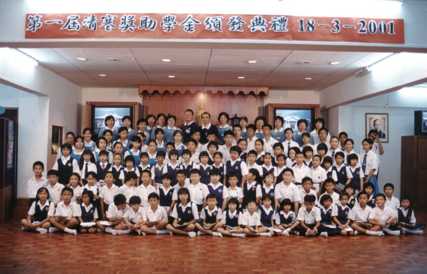
會不會很危險？
為此慈濟於2003年5月，在比打士成立「慈濟生命關懷之家」，為來自偏遠山區的孕婦提供住宿和三餐，接送產婦到醫院生產，並為產後即將回家的媽媽們傳遞醫療保健知識。
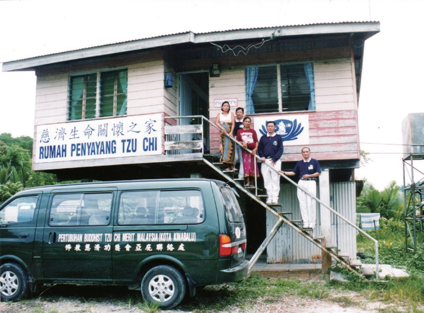
如2013年3月，亞庇甘榜農拔克發生大火，超過兩百六十間水上木屋燒毀，逾兩千四百人無家可歸。

一下子沒有家了……
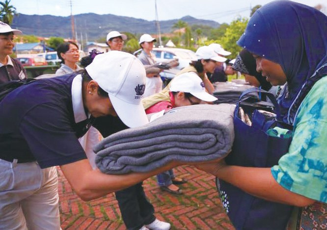
人間的希望在教育
沼澤地裡，沒有身分證的孩子。閱讀引導
新冠疫情嚴峻，慈濟志工前往亞庇沙嘉村關懷，這裡的居民多是無國籍人士，沒有身分證所以無法獲得政府補助。
「人間的希望在教育，孩子隨著時光分分秒秒過去，但願慈濟人的愛不間斷地陪伴孩子長大……」
上人開示・p.677「在山坡上蓋學校，道路去不到，車輛也到不了，建築材料需要一步一步人工運上去。」
亞庇支會負責人張植青說・p.678為了村裡的孩子能上學，許多村民都踴躍報名參與當志工，先從整理校地、維修木橋。路通了，大人、小孩都來幫忙運建材，大家都期盼著這間山頂上的學校。

一起把學校搬上山。
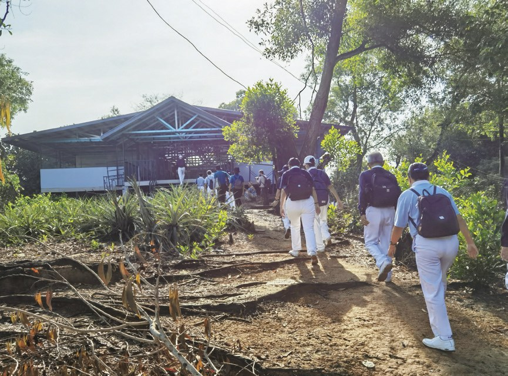
2022年5月9日，亞庇慈濟學習中心開課了。
「一開始心裡有點怕，但深入瞭解之後，發現他們其實和我們一樣，也都需要教育。」
普里茜拉老師說・p.67911歲的努汝頓，因為媽媽生產而欠下大筆費用，他只能退學打工；志工瞭解他們家的狀況後，提供補助，讓家長答應努汝頓重回學校。

又回到學校了！
「無國籍人士的村子就像暗無天日的地方，稱作黑區。他們沒有前途，因為沒有人敢進去，而他們被困在這也無法走出來；孩子無法接受到教育，一代一代這樣傳，感覺沒有希望。不過慈濟人一步一步，很謹慎地踏進去；……」
上人說・p.679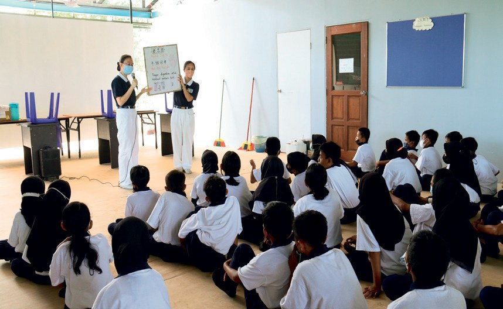
淺灘上的垃圾
捐血、義診，還有一座小島。閱讀引導
馬來西亞民眾約有五千多名地中海貧血症患者，沙巴就佔了一半，當中更有三分之一的病患需定期輸血。自2000年起，亞庇慈濟每三個月舉辦一次捐血活動
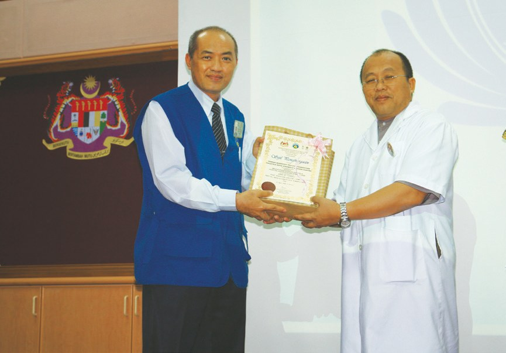
「到達加雅島，看到整個淺灘都布滿垃圾，孩子就在上面嬉戲。」
志工李永明回憶・p.685怎麼辦？
持續帶動居民幾個月後，島嶼淺灘上的垃圾量已明顯減少。
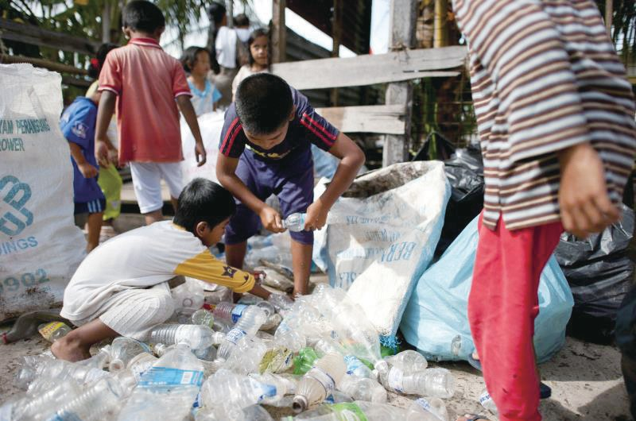
一年期間，該村落收集逾十一噸垃圾回收，讓環保意識落實在島上。
成為別人的貴人
東馬第一顆種子，和亞庇第一位照顧戶。閱讀引導
他很感動慈濟人遠道而來尋覓一個需要幫助的人，因而在夫婦倆接引下加入慈濟，接力關懷彭天送個案，並致力推動亞庇據點成立，承擔負責人一職。
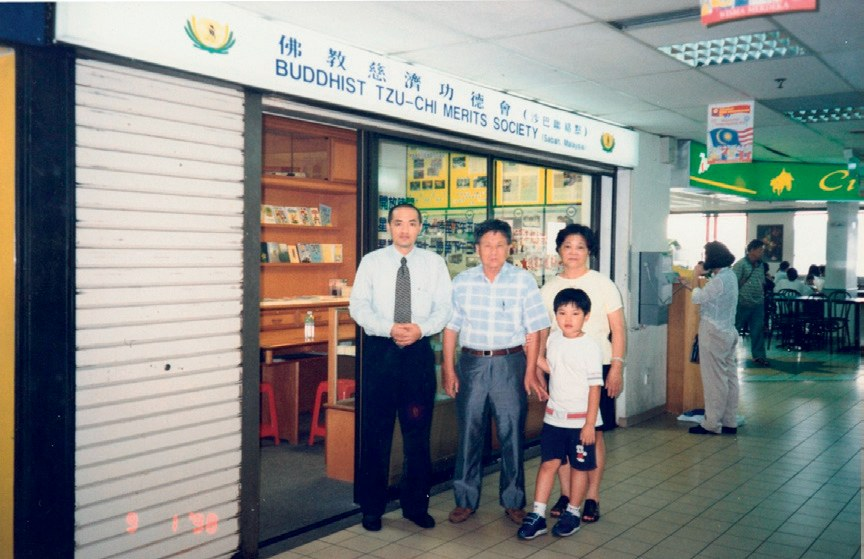
「……更重要的是自己學著去除不好的習氣，發揮良能，過有意義的人生。」
翁敦學說・p.687彭天送病情穩定後，主動要求慈濟停止補助。為了讓他可以自力更生，志工幫他申請機車駕照。
就主動說不用了。
有愛才能使苦難的生活有希望，引導、救助苦難人的身心，讓受助者將來也可以成為別人的貴人。
停一停：誰讓你記住了？閱讀引導
選一位你印象最深的人。沒有標準答案。
有人被遠道而來的慈濟人感動，有人捐出土地和洋房，有老師克服害怕，有孩子重回學校。哪一位讓你最有感覺？

一起回頭看看吧～
回望
依本章原文整理，每一條都標了原書頁碼。閱讀引導
背後原因
為什麼要在山坡上蓋學校

小川沼澤地交通那麼難，為什麼還要在那裡蓋學校？
- 沒有身分證
居民多是無國籍人士，無法獲得政府補助。p.677
- 孩子失學
志工看著當地失學的孩子。p.677–678
- 希望在教育
上人說人間的希望在教育。p.677
後續發展
亞庇一路走來

小禾從第一場茶會到山坡上的學校，經過了多少年？
- 1996.7.29
亞庇第一場慈濟茶會。p.669
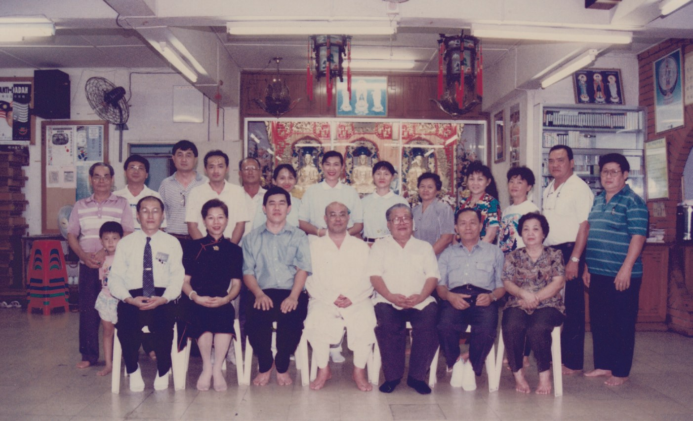
- 1996.11.2
亞庇聯絡點成立。p.670
- 1999.6.20
升格為亞庇聯絡處。p.672
- 2003.5
成立「慈濟生命關懷之家」。p.674
- 2019.1
升格為亞庇支會。p.672
- 2022.5.9
亞庇慈濟學習中心開課。p.678
加雅島的轉變
以前和後來
小川志工陪伴之後，加雅島有什麼不同？
- 垃圾隨手棄置海中家家戶戶自行實踐環保p.684–685
- 孩子在垃圾上嬉戲淺灘垃圾明顯減少p.685
- 政府官員請益環保議題合作推行「加雅島愛心計劃」p.685
以上只整理本章寫到的事；書裡沒寫到的，我們不替它下結論。
回頭看讀前的選擇閱讀引導
上人請馬六甲志工就近關懷（p.669）；翁敦學很感動慈濟人遠道而來尋覓一個需要幫助的人（p.686）；這段因緣開啟了亞庇的慈濟志業（p.688）。再遠也有人親自來，而且一來就生了根。
會不會也成為別人的貴人？
只有你自己看得到喔！

準備好了就一起出發～